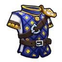
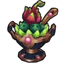

Andarilho
Ladino
Forasteiros misteriosos que sempre têm a ferramenta certa à mão.
Atributos
Ataque (100)
0
Defesa (100)
0
Vida (100)
0
Hypermax: o build mais forte
39º de 42 classes no ranking Hypermax
Poder no placar
438.195
Poder no perfil
350.556
Ataque
25.065
Defesa
24.948
Vida
29.092
Crítico
20%
Dano crítico
×2
Elemento
180
Braços de Almirante de Titã T15
Runa: Elemento Apoteose · Espírito: Espírito de Titã

Gambesão de Trevo T16
Runa: Elemento Gaia · Espírito: Espírito de Titã
Trocador de rostos T15
Runa: Elemento Gaia · Espírito: Espírito de Titã
Botas de Almirante de Titã T15
Runa: Elemento Gaia · Espírito: Espírito de Titã
Rosa Encantada T16
Runa: Elemento Gaia · Espírito: Espírito de Titã

Parfait de Glörkberry T16
Runa: Elemento Gaia · Espírito: Espírito de Titã
Habilidades: Insubstancial T4, Além do Imortal T4, Grande como Granito T4, Marca Premium T4
Calculado só com os dados do jogo: qualidade Lendária, Forjado nas Estrelas, Ascensão e Transcendência, nível 50.